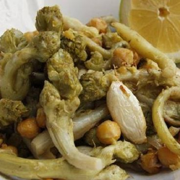
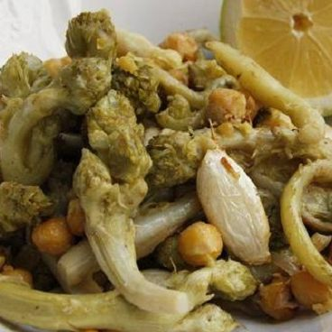

Gundelia with milk
Akoub (scientific name: Gundelia) is a plant genus belonging to the Asteraceae family of the order Asteraceae. It is a spiny plant classified as an angiosperm, and this plate made of the gundelia plant and milk.
Akoub (scientific name: Gundelia) is a plant genus belonging to the Asteraceae family of the order Asteraceae. It is a spiny plant classified as an angiosperm, and this plate made of the gundelia plant and milk.
